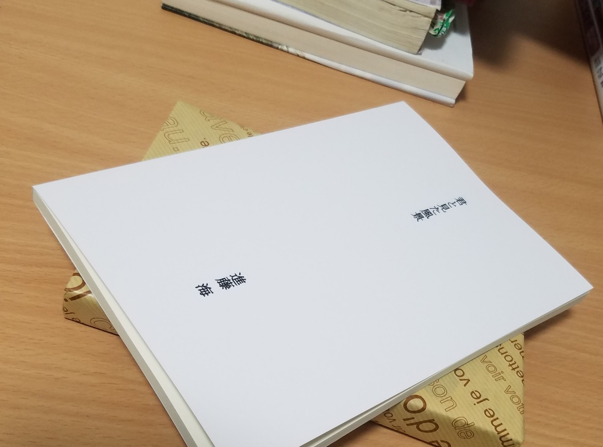

今日の東京は朝から大雨が降っていた。
いつも通り出社の準備をしていると、ある連絡が入り、急いで自宅を出る。
雷雨の影響によりダイヤが乱れていて、そんなことに腹なんか立てても仕方ないのだけれど、それでも早く動いてくれと願う。
記憶はどうしたって塗り替えられない。
幼い頃から優しくて、おおらかで、初孫の僕はよく可愛がられた。
実の娘である母とは正反対の性格で、努力家でどんな人にも優しくて心の広い人だった。
先月、初めて自作を紙の本にした「君と見た風景」を手渡した。
母づてから全部読んでくれたと聞いて、とても嬉しかった。

「今頃何してるのかねぇ。もう仕事から帰ったろうか」
毎日看病していた母が、よくそう口にしているよと言っていた。
だから、休みの日は最優先で見舞いに行った。いつも気遣いを忘れない人で、
「何もできなくてごめんね。元気になったらまた食事行こうね」
が入院してからの口ぐせだった。
思えば、たった2ヶ月のことだった。
それまでとっても元気で、入院なんてしたことなかったけど、ある時から体調不良を訴え、それからはみるみる痩せ干そっていった。
人は数ヶ月でこんなにも弱るものなのか。
人は数ヶ月でこんなにも姿を変えてしまうのか。
今朝、病室に着いた頃にはたくさんの管が口や腕に繋がれていた。
僕はその人の手を握って名前を呼びかけることしかできなかった。
雨音と、心拍数を示すモニターの電子音が鳴り響く中、僕は何度も手をさする。
先週手を握った時は強く握り返してくれた手がひどく冷たくて、まるで知らない人の手のようだった。
僕はいつの間にか思い出の中にいた。
13年前に亡くなった祖父の話、同居している叔父夫婦や孫の話、僕が大学生の時に行った秩父温泉、令和最初の日に初めて招待した食事会、幼い頃に手をひかれながら散歩した温もり。
鮮明に風景が蘇った。
そこには何ら変わらない景色があった。
その風景の中、旅立ちの瞬間は訪れた。
心電図モニターの波形が波打つのをやめた時、耳に入る音全てが色を失い、急に何もない砂漠に投げ出された気持ちになった。
命って何なんだろう。
散っていった魂はこれから何処に向かうんだろう。
僕は砂漠の上で、ただそれだけを考えていた。
死に化粧をした顔は元気な頃そのもので、口元は不思議とはにかんでいる。
みんな泣いているのに、空だって大粒の涙を流しているのに、世界でたった一人だけ笑っている。
狭い病室にはもったいない、たくさんの幸せをふりまいて。
正直、今日起きたばかりの出来事を言葉にすることは躊躇した。
今でも言葉にするには早すぎて、感情が追いつく気配もない。
でも、どんな時も言葉を紡ぐことが記憶を残すことになるんじゃないかって思う。
旅立ちの言葉なんて、大層なことは言えないけれど、強く強く心に残り続けるのは笑顔だ。
どんな時も、息を引き取るまで絶やすことのなかった優しさだ。
それは、全部その人が見せてくれた。
それは、全部その人から学んだことだった。
ありがとう、おばあちゃん。
僕はこれから、もっと強く生きるよ。
ありがとう、おばあちゃん。
またいつか、必ず会おうね。心からの笑顔で。